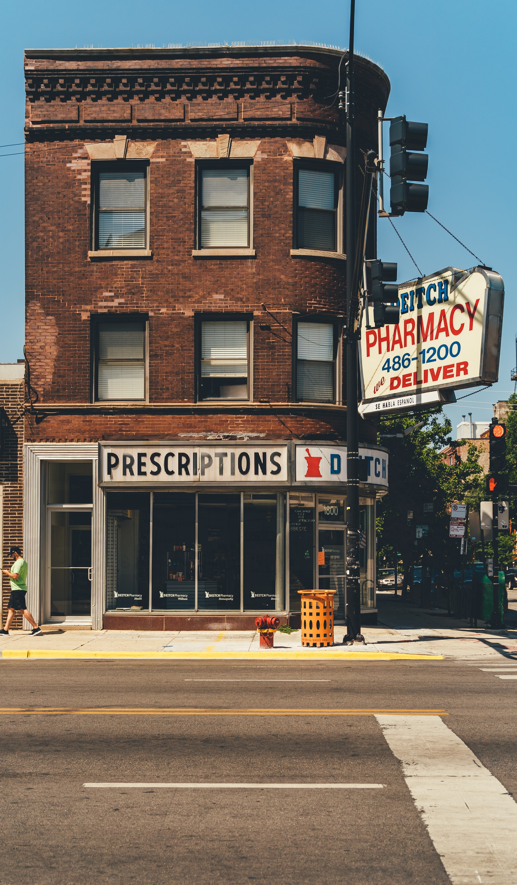

Health Care Quality
The Affordable Care Act of 2010 has led to an increased focus on the use of measures of healthcare quality in novel reimbursement models for payment. My research interest is in the development, measurement, and validation of healthcare quality measures for evaluation of health plans and community pharmacies. As part of a collaboration with Pharmacy Quality Alliance, I have conducted the testing, risk adjustment, and evaluation of several quality measures. I also served as a co-chair on a measure development team to lead a multi-stakeholder national workgroup that developed three quality measures in the area of quality of opioid prescribing. These three quality measures (Initial Opioid Prescribing: Long Duration, Long Acting, and High Dose) were later endorsed by the membership of PQA and approved in May of 2019. The objective of my research efforts in this area is to improve the measurement of healthcare quality in the United States and the effectiveness of quality improvement programs.
Publications:
- Ramachandran S, Galdo JA, Urick BY, Farley JF. Measuring Health Care Quality: Implications, Threats, and Opportunities for Clinical Pharmacists. Journal of the American College of Clinical Pharmacy; In press
- Young J, Ramachandran S, Freeman A, Bentley JP, Banahan BF (2019). Treatment for Psychiatric Disorders in a Statewide Public Mental Health System. PloS One; 14(8), e0221251
- Ramachandran S, Borzillo K, Bauer B, Bentley JP. Risk Adjustment of Adherence Quality Measures: Need, Strategies, and Impact in the new Quality Landscape. Invited Presentation. Pharmacy Quality Alliance Annual Meeting, Baltimore, MD, May 2019
- Ramachandran S, Banahan BF, Bentley JP, West-Strum DS, & Patel AS. (2016). Factors Influencing the Use of Second-Generation Antipsychotics in Children with Psychosis. Journal of Managed Care & Specialty Pharmacy, 22(8), 948-957
Safety of Opioid Use

Increase in prevalence of long-term opioid prescribing in the United States is associated with significant increases in rates of morbidity and mortality. I am interested in investigating the safety of opioid prescribing among individuals with non-cancer pain, with a special focus on older adults. I have served as a co-investigator on NIDA R15 award investigating prevalence and safety of long-term opioid use among older adults. I have also served as senior author on projects examining opioid use patterns in response to acute pain episodes in children enrolled in Medicaid, and evaluating the effect of transient opioid use on incidence of exacerbations among patients in COPD. We hope that the findings from these studies can aid in the development of guidelines and interventions to improve safe and responsible use of prescription opioids
Publications:
- Ramachandran S, Salkar M, Bentley JP, Eriator I, Yang Y (2020). Long-Term Prescription Opioid Use Among Older Adults in The United State. Pain Physician; In press
- Zhang Y, Yang Y, Barnard M, Bentley JP, Ramachandran S (2019). Opioid use for treatment of acute pain among children and adolescents enrolled in Mississippi Medicaid. Journal of Pharmacy Practice; DOI: 0897190019883767
- Rong Y, Bentley JP, McGwin G, Yang Y, Banahan BF, Noble SL, Kirby T, Ramachandran S (2019). Association between Transient Opioid Use and Short-term Respiratory Exacerbation among Adults with Chronic Obstructive Pulmonary Disease (COPD): A Case-crossover Study. American Journal of Epidemiology; 188(11), 1970-1976
- Tucker L, Nation T, Savich R, Tucker D, Ramachandran S, Lindsay D, Blackshear C, Annett R (2018). The Hidden Repercussions of the Opioid Crisis in Mississippi’s Children: Neonatal Abstinence Syndrome/Neonatal Opioid Withdrawal Syndrome. Journal of Mississippi State Medical Association; 59:293-296
Nonmedical Use of Prescription Stimulants
Nonmedical use of prescriptions drugs, particularly prescription stimulants, is increasing in prevalence among college-enrolled adults leading to a widespread economic and clinical burden. Our research in this area is focused on preventing nonmedical use by decreasing misdiagnosis of ADHD and excessive prescribing of stimulant medications. Our research has developed a scale for detection of malingering of ADHD symptoms, in order to improve diagnostic validity and reduce overdiagnosis. We have also studied the factors contributing to nonmedical use of prescription stimulants and piloted strategies to improve validity of self-report of nonmedical use of prescription stimulants.
Publications:
- Ramachandran S, Banahan B, Holmes E, Rosenthal M, Young J, Bentley JP (2018). Development of the Subtle ADHD Manipulation Screener (SAMS). Assessment; DOI:1073191118773881. AACP Best Social & Administrative Sciences Research Paper Award, 2019-20
- Ramachandran S, Rosenthal MM, Young JN, Holmes ER, Bentley JP (2019)
Subtle Scales: An avenue for identification of prescription drug abuse. Research in Social and Administrative Pharmacy; 15, 936-942 - Ramachandran S, Dertien D, Bentley S. (2020). Prevalence of ADHD symptom malingering, nonmedical use, and drug diversion among college-enrolled adults with a prescription for stimulant medications. Journal of Addictive Diseases; 1-10; DOI: 10.1080/10550887.2020.1732762
- Ramachandran S, Goswami S, Zhang Y, Bentley JP. Lie to me: How to overcome dishonest responding in the estimation of prescription stimulant misuse. American Association of Colleges of Pharmacy Annual Meeting. Online; July 2020
Funded Grants
Pharmacy Quality Alliance
- Period/Amount/Role: December, 2022; $141,900; Principal Investigator
- Title: Measurement of pharmacy-level quality
- Investigators: Ramachandran S, Bentley JP
Mississippi Medicaid
- Period/Amount/Role: January, 2020 – December, 2022; $2,357,150; Co-Investigator
- Title: Retrospective DUR & DUR Board Facilitation
- Investigators: Pittman E, Ramachandran S, Banahan B
Funding Agency: Radius, Inc.
- Period/Amount/Role: August, 2019 – July, 2020; $150,000; Principal investigator
- Title: Eliciting Gender Disparities in the Treatment and Management of Osteoporosis
- Investigators: Ramachandran S
Funding Agency: Glaxo Smith Kline
- Period/Amount/Role: April, 2018 - September, 2021; $380,554, Sub-award PI ($11,461)
- Title: April, 2018 - September, 2021; $380,554, Sub-award PI ($11,461)
- Investigators: Gatwood J, Hohmeier KC, Hagemann T, Chiu C, Brookhart A, Ramachandran S
Funding Agency: American Association of Colleges of Pharmacy New Investigator Award
- Period/Amount/Role: February, 2019 – May, 2020; $10,000; Principal investigator
- Title: Overcoming social desirability bias in the estimation of prescription stimulant misuse
- Investigators: Ramachandran S, Bentley JP
Funding Agency: UM Big Data Constellation Seed Grant
- Period/Amount/Role: January 2019-December 2020; $7,961; Principal Investigator
- Title: Influence of Social Determinants of Health on the Rate of Preventable Diabetes-Related Hospitalizations in Medicaid
- Investigators: Ramachandran S, Cafer AM, Mann G, Pittman E
UM Big Data Constellation Seed Grant
- Period/Amount/Role: UM Big Data Constellation Seed Grant
- Title: Maternal Outcomes in the Medicaid System (MOMS) Quality Project
- Investigators: Vij Mali N, Ramachandran S, Barnard M
Pharmacy Quality Alliance
- Period/Amount/Role: Maternal Outcomes in the Medicaid System (MOMS) Quality Project
- Title: Collaborative Research to Support Quality Measure Development, Testing and Outcomes Studies
- Investigators: Ramachandran S
Medical Marketing & Economics
- Period/Amount/Role: October 2018-December 2020; $6,000; Principal investigator
- Title: Health economic analysis of Innovative Treatments in Lupus Nephritis
- Investigators: Ramachandran S
National Institutes of Drug Abuse R15
- Period/Amount/Role: August 2018-August 2021; $443,046; Co-investigator
- Title: August 2018-August 2021; $443,046; Co-investigator
- Investigators: Yang Y, Ramachandran S, Bentley JP
Awards
University of Mississippi School of Pharmacy New Investigator award, 2020-21
AACP Best Social & Administrative Sciences Research Paper Award, 2019-20
Advisor for co-winner of the PCD Student Research Paper Contest (High School Category), 2018
UM nominee for the Ralph E. Powe Junior Faculty Award competition for 2018, 2019
Best podium presentation award at Southern Pharmacy Administration Conference, Oxford, MS, June 2016
Best poster award at American Pharmacists Association (APhA) Annual Meeting & Exposition, Baltimore, MD, March 2016
Graduate Achievement Award, 2015 – 16 and 2015 Honors day program nominee
UM Phi Kappa Phi Academic Honors society scholarship, 2015 – 16
Terrence E. Downer Marketing Scholarship, 2015 – 16
Winner of the inaugural National Case Study Contest and invitee to the Pharmaceutical Marketing Research Group (PMRG) Annual meeting in Philadelphia, PA, October 2015
3 Minute Thesis competition:
- Grand Prize Winner, and University of Mississippi represent at the Conference of Southern Graduate Schools (CSGS) 2015
- People’s Choice Award at CSGS, March 2015, New Orleans, LA